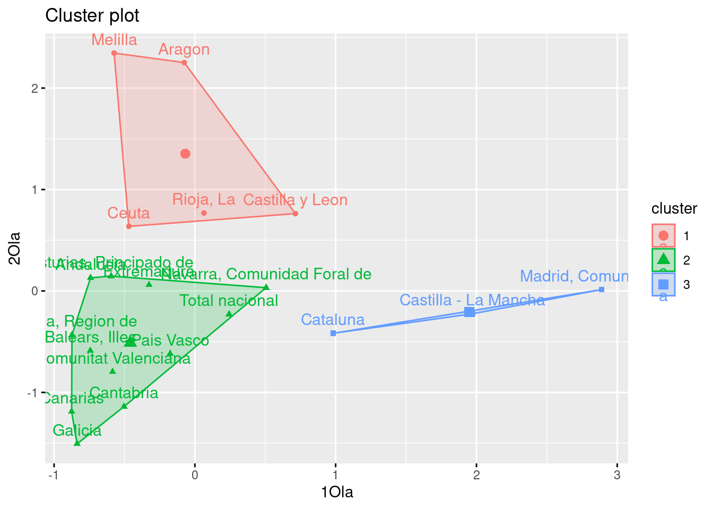
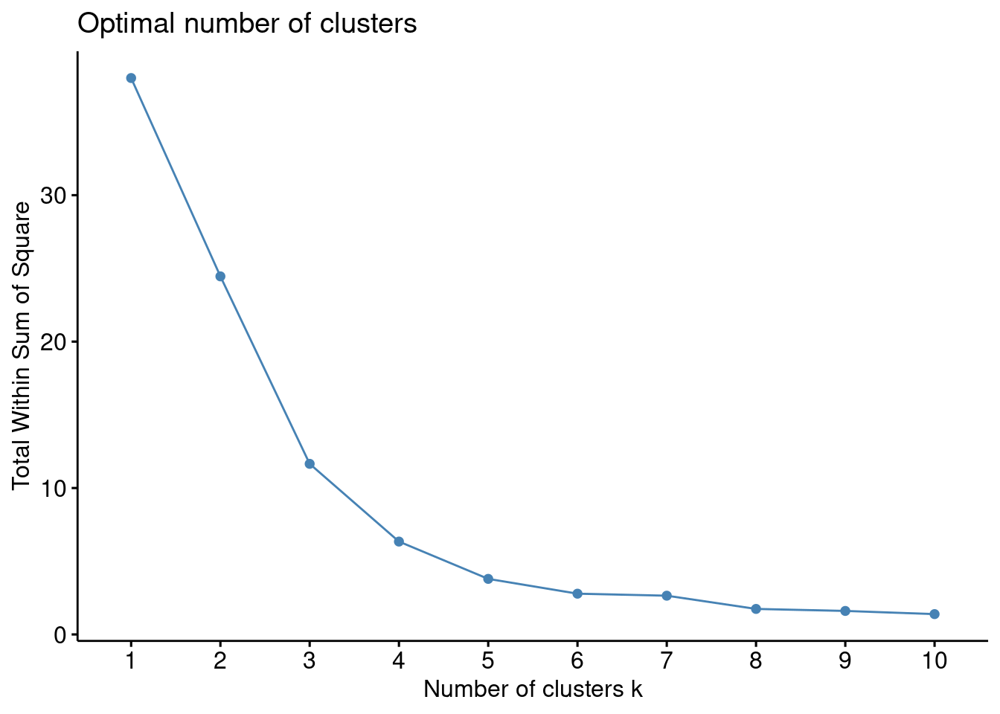
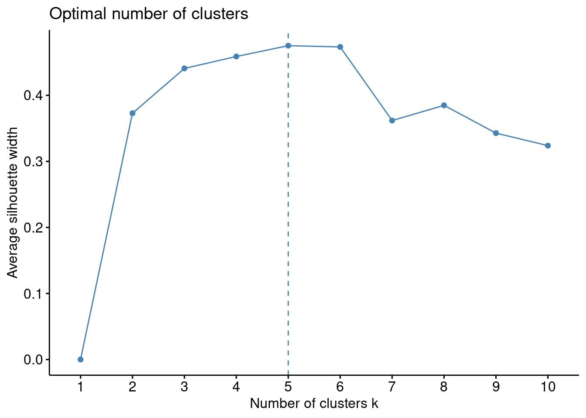

# Librerias
library(readxl) # Para leer los excels
library(dplyr) # Para tratamiento de dataframes
library(ggplot2) # Nice plots
library(factoextra) # fviz_cluster functionCluster K-Means: VarCovid
Introducción
dataset
En este cuaderno vamos a analizar el dataset llamado VarCovid. Este contiene datos relativos a las Tasas de Variación de fallecidos en el año 2020 (Año Covid) respecto al año anterior. Los datos han sido extraidos de la Operación 30324 Estimación de Defunciones Semanales (EDeS), que se encuentra dentro de la temática Salud (Sociedad). Concretamente en este dataset tenemos las siguientes variables:
- ccaa: Comunidades Autónomas
- 2020SM20: Tasa de variación del acumulado hasta la semana 20 incluida del año 2020 respecto al año anterior en ese mismo periodo.
- 2020SM53: Tasa de variación del acumulado hasta la semana 53 incluida del año 2020 respecto al año anterior en ese mismo periodo.
- 1Ola: Tasa de variación entre el acumulado entre la semana 11 de 2020 y la semana 18, ambas incluidas, respecto a las mismas semanas del año anterior. Tiempo correspondiente a la primera ola
- 2Ola: Tasa de variación entre el acumulado entre la semana 32 de 2020 y la semana 49, ambas incluidas, respecto a las mismas semanas del año anterior. Tiempo correspondiente a la segunda ola.
- 3Ola: Tasa de variación entre el acumulado entre la semana 51 de 2020 y la semana 10 de 2021, ambas incluidas, respecto a las mismas semanas del año anterior. Tiempo correspondiente a la tercera ola.
El objetivo de este estudio será aplicar un Análisis Cluster para hacer grupos de comunidades autónomas en función de las variables 1Ola y 2Ola. Concretamente usaremos un cluster K-Means
Cargamos entonces el conjunto de datos:
datos <- read_excel("../../../files/VarCovid.xlsx", sheet = "Datos")Descripción del trabajo a realizar
(Esto irá en la web de explica) Se pretende hacer un Análisis Cluster empleando el procedimiento Cluster K-Means de las ccaa en función a las variables 1Ola y 2Ola.
- Hacer un análisis exploratorio.
- Ver si hay NA’s y si es necesario escalar los datos.
- Plantear variables sobre las que se van a hacer los cluster.
- Interpretar resultados.
- Ver métodos Elbrow y Silhouette si hay otro número óptimo de clusters y en ese caso repetir el estudio.
Análisis Exploratorio (EDA1)
Lo primero de todo vamos a cargar las librearias necesarias para ejecutar el resto del código del trabajo:
Clustering: Cluster K-means
Introducción
El Análisis de clúster es una técnica de aprendizaje no supervisado que agrupa datos similares en conjuntos, llamados clústeres. El objetivo es dividir un conjunto de datos en grupos homogéneos, donde los miembros de cada grupo son más similares entre sí que con los miembros de otros grupos, según algún criterio de similitud predefinido.
Concretamente, el Cluster K-Means define clusters de modo que se minimice la variación total dentro del grupo de acuerdo con el algoritmo Hartigan-Wong (Hartigan y Wong 1979), que define la variación total dentro del grupo como la suma de las distancias al cuadrado de las distancias euclidianas entre elementos y el centroide correspondiente. Se describe a continuación.
Los pasos generales de este algoritmo son:
Especificar el número de clusters (K) que se se desean obtener.
Seleccionar aleatoriamente k objetos del conjunto de datos como centros del grupo (centroides). Asigna cada observación a su centroide más cercano, según la distancia euclidiana entre el objeto y el centroide.
Para cada uno de los k grupos, actualizar el centroide del grupo calculando los nuevos valores medios de todos los puntos de datos del grupo. El centoide de un grupo K-ésimo es un vector de longitud p que contiene las medias de todas las variables para las observaciones en el grupo K-ésimo; p es el número de variables.
Minimizar iterativamente el total dentro de la suma del cuadrado. Es decir, repetir los pasos 3 y 4 hasta que las asignaciones del clúster dejen de cambiar o se alcance el número máximo de iteraciones. De forma predeterminada, el software R utiliza 10 como valor predeterminado para el número máximo de iteraciones.
Véase funciones de R stats::kmeans(x, centers, iter.max, nstart) que realizan los pasos 2-5 automáticamente.
Modelo
Formulación
IMPORTANTE:
- Ver que no hay ningún NA en el dataset.
- El escalado es un paso esencial en la fase de preprocesamiento de datos para los algoritmos de agrupación. Garantiza que cada característica contribuya por igual al proceso de decisión del algoritmo, lo que lleva a resultados de agrupación más precisos e interpretables.
ifelse(sum(is.na(data)) == 0, print("There is no NA in the dataset."), print("There is some NA in the dataset."))[1] "There is no NA in the dataset."[1] "There is no NA in the dataset."Si quueremos que el código sea reproducible, es necesario fijar semilla (función set.seed(n)) ya que el algoritmo k-means elige los centroides iniciales aleatoriamente.
# Preparación de los datos
resultado <- datos[, c("1Ola", "2Ola")]
resultado <- scale(resultado) # scaling/standardizing
rownames(resultado) <- datos$ccaa # Para que nos salgan luego los nombres
comunidades <- datos$ccaa
# K-MEANS algortihm
set.seed(785248) # reproducibilidad
k1 <- kmeans(resultado, centers = 3, nstart = 25)
k1K-means clustering with 3 clusters of sizes 5, 12, 3
Cluster means:
1Ola 2Ola
1 -0.06792789 1.3528076
2 -0.45864725 -0.5113092
3 1.94780216 -0.2094426
Clustering vector:
Total nacional Andalucia
2 2
Aragon Asturias, Principado de
1 2
Balears, Illes Canarias
2 2
Cantabria Castilla y Leon
2 1
Castilla - La Mancha Cataluna
3 3
Comunitat Valenciana Extremadura
2 2
Galicia Madrid, Comunidad de
2 3
Murcia, Region de Navarra, Comunidad Foral de
2 2
Pais Vasco Rioja, La
2 1
Ceuta Melilla
1 1
Within cluster sum of squares by cluster:
[1] 4.039852 5.699660 1.912043
(between_SS / total_SS = 69.3 %)
Available components:
[1] "cluster" "centers" "totss" "withinss" "tot.withinss"
[6] "betweenss" "size" "iter" "ifault" fviz_cluster(k1, data = resultado) # plot
Podemos observar que la agrupación en 3 clusters que ha hecho el algortimo K-MEANS es bastante similar a la que obtuvimos con el cluster jerárquico. Por un lado tenemos un clsuter de los valroes que se encuentran más a la derecha, luego otro con los que están más arriba y otros con los más cercanos al origen. En cierto modo:
El cluster azul representa las CCAA donde el exceso de mortalidad respecto al año anterior fue mucho mayor en la primera que en la segunda ola, es decir, hubo más muertes en la primera que en la segunda ola. Notar que en este cluster encontramos las dos comunidades con más población y flujo de visitantes del país, Comunidad de Madrid y Cataluña, luego tiene sentido que fueran las pioneras en tener una tasa alta de muertes. De hecho durante las primeras semanas de virus en España, fueron Castilla-La Mancha y Madrid las que presentaban peores números.
El cluster rojo representa las CCAA donde el exceso de mortalidad respecto al año anterior fue mucho mayor en la segunda que en la primera ola, es decir, hubo más muertes en la segunda que en la primera ola. Notar, que a excepción de Ceuta y Melilla, las comunidades que aparecen aquí, son comunidades con gran población residente en núcleos rurales y por ello la propagación del virus tardó en extenderse. Debido a que no tienen grandes ciudades esta propagación inicial fue más lenta y por ello la segunda ola causo más exceso de mortalidad que la priemra.
Por último, el cluster verde presenta comunidades que tuvieron una incidencia parecida en la primera y segunda ola.
Número Clusters Óptimo
Encontrar el número óptimo de clusters implica identificar la cantidad ideal de grupos en los que se pueden dividir los datos de manera significativa y coherente. Es crucial porque determina la calidad y utilidad de los resultados del análisis de agrupamiento.
Método Elbrow
Una de las formas comunes de determinar este número es a través del método del codo o elbow en inglés. Este método busca identificar el punto donde la adición de más clusters ya no proporciona un beneficio significativo en la varianza explicada o la cohesión dentro de los grupos.
Al representar la variación explicada en función del número de clusters, observamos un gráfico que se asemeja a la forma de un codo. A medida que aumentamos el número de clusters, la varianza explicada tiende a disminuir. El punto en el que esta disminución se estabiliza o se aplana marca el número óptimo de clusters, indicando un equilibrio entre una mayor partición (más clusters) y una adecuada interpretabilidad de los grupos.
# Método Elbrow
set.seed(785248)
factoextra::fviz_nbclust(resultado, kmeans, method = "wss",print.summary = TRUE)
El número óptimo de k parece ser 5 que es donde más se reduce la pendiente y la variabilidad explicada no parece disminuir de forma tan rápida. De todos modos, también podría parecer razonable tomar el 4 o el 6. Es por ello que vamos a usar algún método adicional.
Método Silhouette
El método Silhouette es una técnica utilizada para determinar la calidad de la agrupación en un conjunto de datos. Consiste en calcular el valor de la silueta para cada punto de datos, que mide qué tan similar es un punto a su propio grupo (cohesión) en comparación con otros grupos vecinos (separación).
El proceso implica:
Cálculo de la silueta individual: Para cada punto de datos, se calcula la silueta, que es la diferencia entre la distancia media intra-cluster (distancia al resto de puntos en su mismo grupo) y la distancia media al cluster más cercano (distancia a los puntos del grupo más próximo, excluyendo el propio grupo).
Valor de la silueta global: Se obtiene el promedio de las siluetas individuales de todos los puntos de datos en el conjunto. Contra más cercano a 1, mejor formado estará el clsuter.
La siguiente función generará un gráfico que muestra los valores de Silhouette en función del número de clusters. El número óptimo de clusters es típicamente aquel que maximiza el valor de Silhouette, representando una mejor cohesión intra-cluster y separación inter-cluster.
# Método Silhouette
set.seed(785248)
factoextra::fviz_nbclust(resultado, kmeans, method = "silhouette")
Este método nos reafirma que el número óptimo es 5 puesto que es el caso cuyos clusters maximiza el valor de Silhouette, representando una mejor cohesión intra-cluster y separación inter-cluster.
NOTA: Ahora podríamos repetir el estudio anterior con el número de clusters igual a 5 e intentar analizar de neuvo los resultados. # Conclusiones
Aquí se han explicado los supuestos del K-Means cluster con un caso práctico relacionado con el COVID.
Footnotes
EDA viene del Inglés Exploratory Data Analysis y son los pasos relativos en los que se exploran las variables para tener una idea de que forma toma el dataset.↩︎